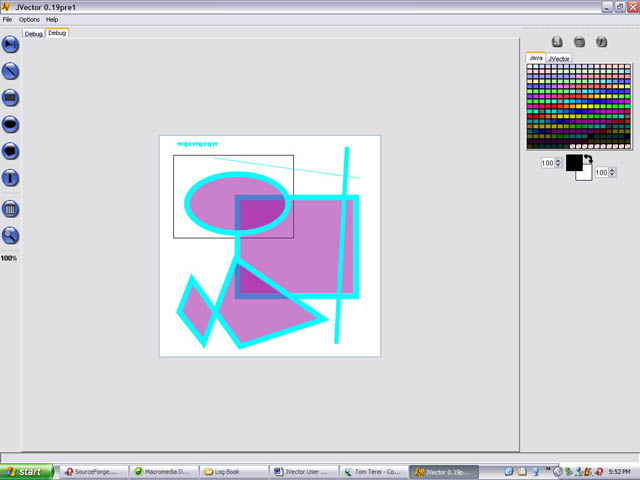
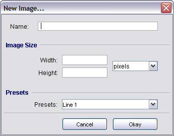
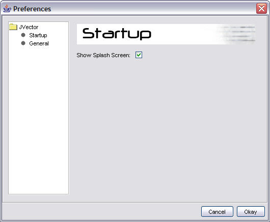
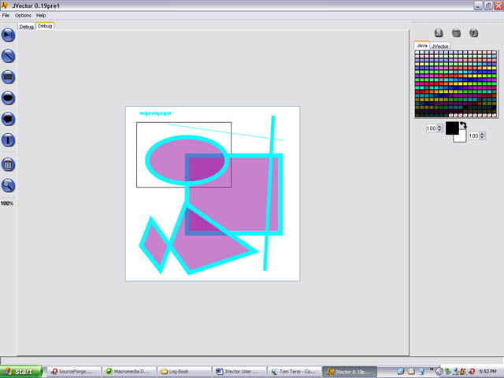
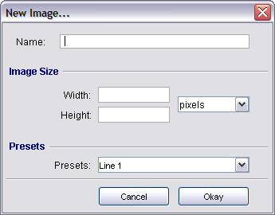
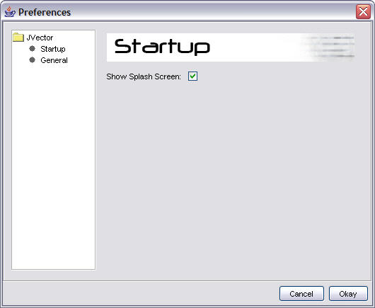

JVector Main Window

JVector Main Window (Zoomed in on image)

JVector New Image Dialog

JVector Preferences Dialog

| JVector Project | |
|
|
JVector Main Window  JVector Main Window (Zoomed in on image)
JVector New Image Dialog  JVector Preferences Dialog 
|